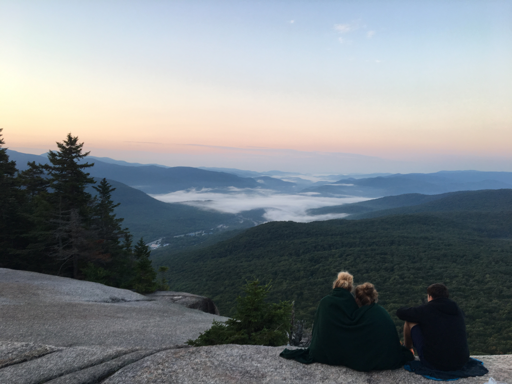
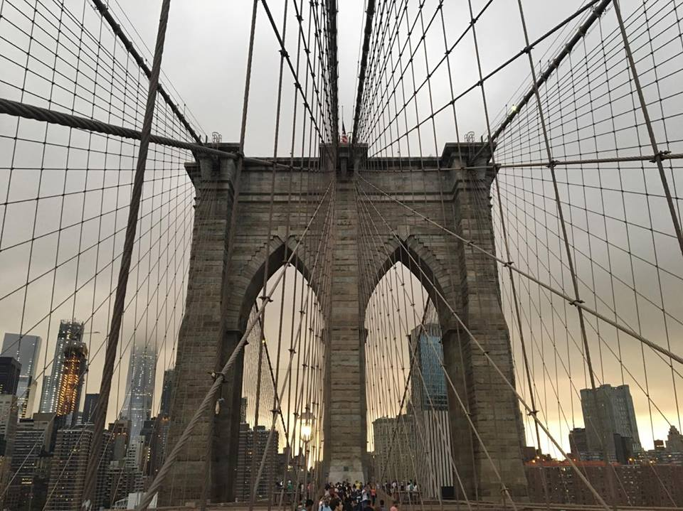

My Hobbies
Here is some of my hobbies that I'd like to share with you.
Traveling
My dream is to one day travel the world. I've already visited
a lot of places, but there is still so much left. Here is some of
of the pictures from the last summer, when I was traveling in the
United States.


Photography
I was always interested in taking pictures, however
I've never gave much effort to it. It was always something
that I'd like to do but never did. However, last year I've
got an old photo camera Zenit11 from my grandfather and the idea
to take pictures in old way seemed much more interesting than
to do it digitaly. You never know what you've captured, you can
just imagine. Also the time while waiting for the pictures to be
made drives me. The moment of receiving the photos is fascinating,
even some of them are blured or out of focus it brings a memory
from the exact moment you made it. That's why I love it.